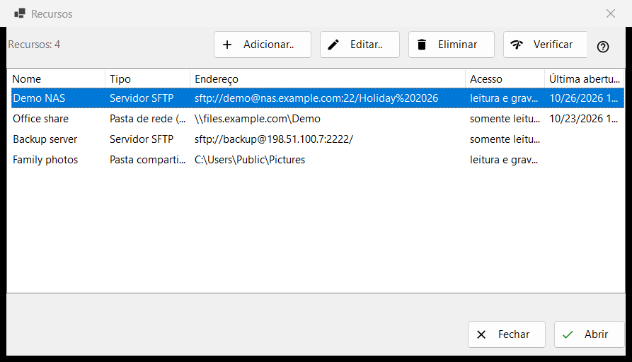
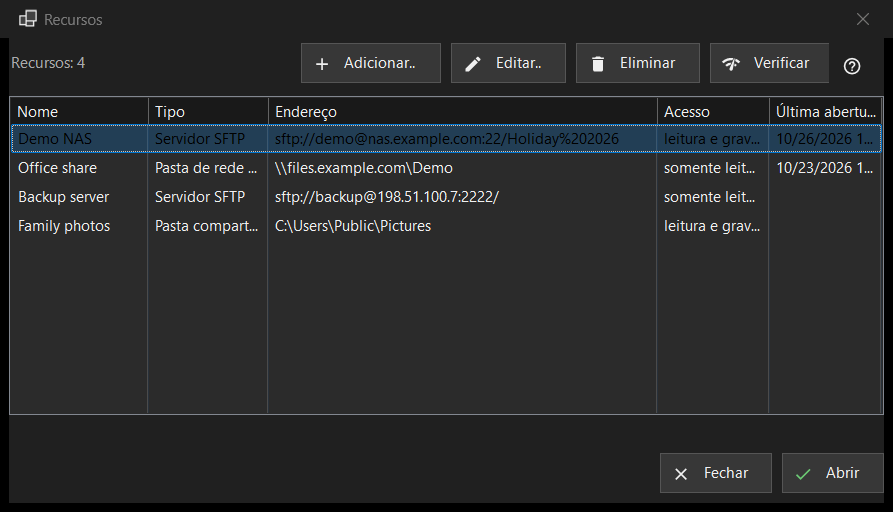

Recursos
Finalidade
A lista de servidores e pastas de rede que o programa pode abrir: servidores SFTP, pastas de rede do Windows (SMB) e pastas que o Share Manager compartilha a partir deste computador. Abre-se em «Gerenciar recursos..» no menu de pastas; a mesma lista está na página «Servidor e recursos» da janela de Configurações.


Nesta ordem
- Pressione «Adicionar..» e preencha os dados do servidor, ou traga um arquivo de configurações pelo botão «Mais».
- Selecione a nova linha e pressione «Verificar».
- Pressione «Abrir» ou clique duas vezes na linha: o programa se conecta e mostra a pasta do servidor.
- Use «Editar..» para mudar um endereço ou uma senha e «Eliminar» para esquecer um recurso.
Os elementos
A lista
Colunas: Nome, Tipo, Endereço, Acesso e Última abertura. O tipo é «Servidor SFTP», «Pasta de rede (SMB)» ou «Pasta compartilhada (Share Manager)»; o acesso diz «Só leitura» ou «Leitura e escrita». Uma linha abaixo da lista conta os recursos e, se não houver nenhum, a janela mostra uma dica e um botão «Adicionar..». Editar, Eliminar e Verificar (e Abrir na fileira inferior da janela Recursos) precisam de uma linha selecionada; enquanto não houver, a dica deles diz «Selecione primeiro um recurso na lista».
Adicionar.. e Editar..
«Adicionar..» abre o formulário de um novo recurso e «Editar..» o do recurso selecionado. Uma senha digitada ali é guardada cifrada para a sua conta do Windows, nunca na própria lista.
Eliminar
«Eliminar» pergunta antes, e a resposta padrão é Não. A pergunta nomeia o recurso e diz que a senha salva para ele também é removida, enquanto os arquivos no servidor não são afetados.
Verificar
«Verificar» testa a linha selecionada sem abri-la. Para um servidor SFTP, tenta todos os endereços conhecidos do recurso e informa cada um como host:porta com um veredicto: uma resposta SSH viva faz da verificação um sucesso, uma porta aberta que não é SSH é um aviso, o silêncio é uma falha. Nenhuma senha é enviada. Para uma pasta de rede, abre o compartilhamento com a senha salva e lê a sua pasta principal; se não houver senha salva, pede que você a informe em «Editar..». Para uma linha do Share Manager, apenas verifica se a pasta existe neste computador.
Abrir
«Abrir», ou um clique duplo numa linha, entrega o recurso ao programa, que se conecta e mostra a sua pasta. Se não houver senha salva, ou se a salva for recusada, primeiro uma pequena janela a pede.